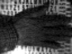
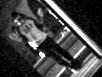
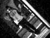

Single pixel camera dataset
Hardware
We built a single-pixel camera using a DLP V7000 digital micromirror device (DMD), a Thorlabs PDA100A photodetector and a Digilent Analog Discovery analog-to-digital converter.
The DMD has 1024 * 768 micromirrors and can change the mirror configurations at 22.7 kHz. We operate DMD at this speed and our SPC
can obtain 22.7k measurements per second.
For obtaining compressive measurements, we use a permuted Hadamard matrix as the measurement matrix. For an N * N image (N = 64 or 128 in this dataset), we first generate an N^2 * N^2 column-permuted Hadamard matrix.
Each row of this matrix is reshaped into an N * N matrix and then upsampled to the 1024 * 768 mircomirror array (e.g. when N = 64, every block of (1024 / 64) * (768 / 64) = 16 * 12 micromirrors acts as one mirror).
The Hadamard matrix is composed of +1/-1 measurements but the DMD can only implement a 0/1 measurement. To resolve this mismatch, we first change all "-1" to "0" in the measurement matrix,
take the measurements, and then subtract all "1" measurement from all measurements doubled, e.g. [1 -1 1 -1] = [1 0 1 0] * 2 - [1 1 1 1]. In practice, we can simply subtract the median of all
measurements.
Below is a photo of our hardware. The shaded area is another compressive sensing camera LiSens. We built SPC to compare it to LiSens.
Static objects
This dataset contains 20 objects with four different backgrounds. It can be used for testing compressive sensing recontruction and object recognition algorithms.
The resolution for each object has two versions, 64*64 and 128*128. The fourth background is also included.
Download measurement matrix and raw data here staticObjects.zip [63.4MB].
Dynamic scenes 1
This dataset contains 14 video clips of movement. It can be used for testing compressive sensing video recontruction and human action recognition algorithms.
each with 5 actions (one hand waving, two hand waving, boxing, bending, and squarting)
Each video contains action of at least two cycles.For human action recognition, the variations include: occlusion, changing light, changing object distance, etc. See the GIF files below.
The resolution is 64 * 64. The first video is background only.
Download measurement matrix and raw data here dynamic1.zip [44.2MB].

Dynamic scenes 2
This dataset contains 55 video clips of human movement. It can be used for testing compressive sensing video recontruction and object tracking algorithms.
It includes 11 people, each with 5 actions (one hand waving, two hands waving, boxing, bending, and squarting). Each video contains action of at least two cycles.
See the GIF files below. The resolution is 64 * 64. Download measurement matrix and raw data here dynamic2.zip [100MB].

 



Related publications
"LiSens — A Scalable Architecture for Video Compressive Sensing",
Jian Wang, Mohit Gupta, and Aswin C. Sankaranarayanan;
in ICCP2015
[Paper]
"Reconstruction Free Inference from Compressive Measurements",
Suhas Lohit, Kuldeep Kulkarni, Pavan Turaga,
Jian Wang and Aswin C. Sankaranarayanan
in CCD 2015
[Paper]
Contact